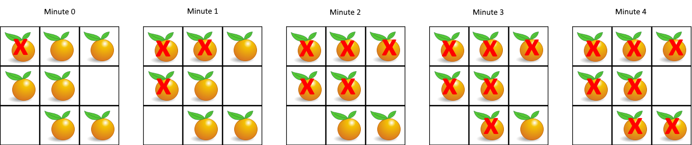

Leetcode 994.腐烂的橘子【C++】
本文最后更新于：2020年7月4日 晚上
题目
在给定的网格中，每个单元格可以有以下三个值之一：
值 0 代表空单元格；
值 1 代表新鲜橘子；
值 2 代表腐烂的橘子。
每分钟，任何与腐烂的橘子（在 4 个正方向上）相邻的新鲜橘子都会腐烂。
返回直到单元格中没有新鲜橘子为止所必须经过的最小分钟数。如果不可能，返回 -1。
示例 1：

输入：[[2,1,1],[1,1,0],[0,1,1]]
输出：4示例 2：
输入：[[2,1,1],[0,1,1],[1,0,1]]
输出：-1
解释：左下角的橘子（第 2 行， 第 0 列）永远不会腐烂，因为腐烂只会发生在 4 个正向上。示例 3：
输入：[[0,2]]
输出：0
解释：因为 0 分钟时已经没有新鲜橘子了，所以答案就是 0 。提示：
- 1 <=
grid.length<= 10 - 1 <=
grid[0].length<= 10 grid[i][j]仅为 0、1 或 2
解题思路（1）
笨办法，先记录一下吧😅（内存消耗 :15.2 MB, 在所有 C++ 提交中击败了5.40%的用户）
我不确定有没有不用模拟橘子被感染的办法，如果有的话我觉得应该会更好一些。我一上来想到的就是模拟橘子被感染的整个过程，所以需要逐个橘子判断它的当前状态，然后判断它的上下左右的橘子的状态，如果存在需要感染的情况就修改某个橘子的状态。
我定义了一个同样大小的二维数组用来作为状态记录表(这里是主要占用内存的地方)，初始化为全0，其中的整数即表示分钟数
另外定义了一个函数用于判断橘子是否全部腐烂，或者还有橘子可以被感染，或是存在不可能被感染的橘子。
代码
class Solution {
public:
int orangesRotting(vector<vector<int>>& grid) {
int minute = 0;
size_t rows = grid.size();//行数
size_t cols = grid[0].size();//列数
vector<int> temp(cols);//仅用于初始化状态记录表
vector<vector<int>> record(rows, temp);//状态记录表，初始化为全0，数字0，1，2表示第0，1，2步
//模拟橘子随时间被感染
while (isInfectionOver(grid) == 1)
{
minute++;//分钟数+1
//同步遍历橘子网格与状态记录表
for (size_t i = 0; i < rows; i++) {
for (size_t j = 0; j < cols; j++) {
if (grid[i][j] == 2 && record[i][j] < minute) {
record[i][j] = minute;
//感染上侧橘子
if (i > 0 && grid[i - 1][j] == 1) {
grid[i - 1][j] = 2;
record[i - 1][j] = minute;
}
//感染下侧橘子
if (i < rows - 1 && grid[i + 1][j] == 1) {
grid[i + 1][j] = 2;
record[i + 1][j] = minute;
}
//感染左侧橘子
if (j > 0 && grid[i][j - 1] == 1) {
grid[i][j - 1] = 2;
record[i][j - 1] = minute;
}
//感染右侧橘子
if (j < cols - 1 && grid[i][j + 1] == 1) {
grid[i][j + 1] = 2;
record[i][j + 1] = minute;
}
}
}
}
}
return isInfectionOver(grid) == 2 ? -1 : minute;
}
//是否感染结束，可能的返回值为0，1，2
//0表示所有橘子都已腐烂；1表示仍存在可以被感染的橘子；2表示存在不可能被感染的橘子
int isInfectionOver(vector<vector<int>>& grid) {
int ret = 0;//作为返回值
size_t rows = grid.size();//行数
size_t cols = grid[0].size();//列数
for (size_t i = 0; i < grid.size(); i++) {
for (size_t j = 0; j < grid[i].size(); j++) {
//只需判断表中的新鲜橘子是否可能被感染
if (grid[i][j] == 1) {
ret = 2;//此处默认这个橘子不可能被感染
//上侧有腐烂橘子
if (i > 0 && grid[i - 1][j] == 2)
return 1;
//下侧有腐烂橘子
if (i < rows - 1 && grid[i + 1][j] == 2)
return 1;
//左侧有腐烂橘子
if (j > 0 && grid[i][j - 1] == 2)
return 1;
//右侧有腐烂橘子
if (j < cols - 1 && grid[i][j + 1] == 2)
return 1;
}
}
}
return ret;
}
};解题思路（2）
其实不是我自己想出来的这个解法~这是我自己用上面的思路解出来后，本来想自己优化一下上面的代码，结果改来改去反而不能正常运行了……然后我才去看了别人的题解，其中看了这个，思路比较简单，然后我觉得有些地方挺有亮点的，所以就自己复现了一遍。
将腐烂的橘子和新鲜橘子分了两类，腐烂的橘子用一个 queue<pair<int, int>> 类型的队列存储坐标，新鲜橘子只统计其个数。需要记录每分钟橘子开始腐烂前的腐烂的橘子的个数 n ，即处理完这n个腐烂的橘子分钟数才+1，逐个判断队列头的腐烂橘子周围是否有新鲜橘子需要感染，如果有就将这个新鲜橘子置为 2 即这个橘子已腐烂，将新腐烂的橘子的坐标加入到队列，并将新鲜橘子的个数-1。此外，还需要注意某一分钟内的n个腐烂橘子是否真的有感染周围的新鲜橘子，如果并没有感染任何新鲜橘子，那么分钟数是不应该增加的。直到所有的队列中的腐烂橘子处理完毕，跳出循环，此时如果新鲜橘子个数为0，即所有橘子均已腐烂，返回分钟数；若剩余新鲜橘子个数大于0，则说明存在不可能被感染的橘子，此时返回 -1。
几个值得学习的亮点：
- 用
pair<int, int>来记录二维数组的横纵坐标。真的很方便，简直量身定做吖； - 用队列了处理腐烂的橘子。已处理过的橘子只需从队列头弹出，完美避免重复工作；
- 用
vector<pair<int, int>> around = { {-1,0},{1,0},{0,-1},{0,1} };来对grid[i][j]上下左右相邻的位置进行处理。很巧妙的办法，因为grid[i][j]的横纵坐标{i,j}分别加上{-1,0},{1,0},{0,-1},{0,1}后即为上下左右相邻四个位置的横纵坐标，只需写一个循环即可处理四种情况，而不用对四种情况进行单独判断（比如解题思路（1）中我的代码😅）。
代码
class Solution {
public:
int orangesRotting(vector<vector<int>>& grid) {
queue<pair<int, int>> rottenQueue;//保存腐烂橘子坐标的队列
int fresh = 0;//剩余新鲜橘子的个数
//统计
for (size_t i = 0; i < grid.size(); i++) {
for (size_t j = 0; j < grid[0].size(); j++) {
if (grid[i][j] == 2)
rottenQueue.push({ i, j });
if (grid[i][j] == 1)
fresh++;
}
}
int minute = 0;//分钟数
vector<pair<int, int>> around = { {-1,0},{1,0},{0,-1},{0,1} };//+{i,j}后分别是上下左右
while (!rottenQueue.empty())
{
int n = rottenQueue.size();//当前队列中的腐烂橘子个数，处理完这n个橘子分钟数才+1
bool rotten = false;
for (int i = 0; i < n; i++) {
//从队列头取出一个腐烂橘子
auto rot = rottenQueue.front();
for (auto side : around) {
int i = rot.first + side.first;
int j = rot.second + side.second;
if (i >= 0 && i < grid.size() && j >= 0 && j < grid[0].size() && grid[i][j] == 1) {
grid[i][j] = 2;//这个橘子会腐烂
rottenQueue.push({ i,j });//将新腐烂的橘子加入队列
fresh--;//新鲜橘子减少一个
rotten = true;//当前橘子腐烂了周围的橘子
}
}
rottenQueue.pop();//已处理过的腐烂橘子无需再处理
}
if (rotten == true) {
minute++;//分钟数+1
}
}
return fresh == 0 ? minute : -1;
}
};本博客所有文章除特别声明外，均采用 CC BY-SA 4.0 协议 ，转载请注明出处！